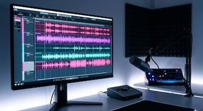

About My Creative Process
My approach to sound design is rooted in the philosophy that the most compelling audio is organic and tactile. By combining physical, practical sound generation, such as custom Foley props and analog recording techniques, with precise digital post-production, I create unique, story-driven soundscapes that enhance the visual experience.

Production Workflow
Utilizing high-quality field recorders, specialized microphones, and custom Foley surfaces, I capture raw physical audio that provides realistic textures and environmental depth. This source-first mentality ensures every sound cue has an authentic foundation.
Digital Editing & Mastering
Recorded audio is sculpted within professional digital audio workstations. This stage involves complex layering, precise timing synchronization with visual cuts, spectral cleaning, and final mastering to achieve a pristine, high-impact audio product.